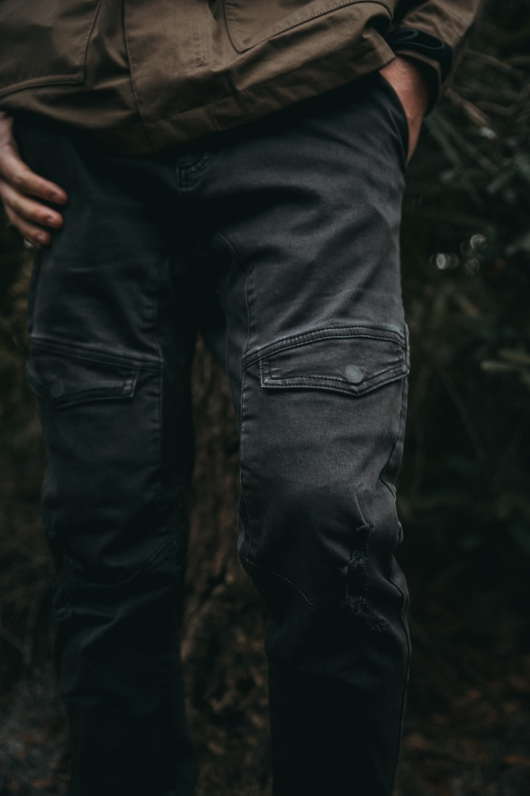

[ TAILOR RESEARCH // LOGS ]
Tailoring coordinates, stitch tensile maps, & sheep wool logs.
A structured collection of technical articles on sheep wool outerwear weaves, stitch tensile maps, natural plant dyeing, and vintage needle clearances.
Tweed Fabric: Organic Wool Weaves
Evaluating warp and weft counts between heavy Harris Tweed and fine organic merino coat fabrics.

Tailoring Needles: Clearances Timing
Adjusting shuttle flight guides on heritage singer frames to maintain clean loop threads.

Horn Buttons: Tensile Stress Tests
Measuring pulling margins across four-hole horn fasteners to avoid loose threads during heavy walks.
Linen Linings: Moisture Wicking
Evaluating breathability indexes between linen and silk panels inside tailored parkas.

Sewing Machines: Tension Balance
Measuring stitch friction loads across heavy-duty needles to secure puff-free flat seams.

Garment Hangers: Shoulder Stretch
How wide wooden hangers distribute coat weights to protect shoulder padding structures.
Fabric Friction: Martindale Swatches
Measuring thread lifetimes across wool panels to prevent early thinning at elbow regions.

Denim Threads: Indigo Wash Fades
Analyzing dye levels on denim yarns to maintain structured color fading cycles during washings.
Natural Tannin: Walnut Dye Baths
Evaluating nitrogen dye bonds and solar simulator fading limits on organic sheep wool yarns.

Winter Coats: insulation scales
Measuring heat retention drops across wool-padded parkas inside environmental cold simulator chambers.
Coat Seams: Cracking Cold Trials
Testing how sub-zero weather levels affect canvas panel folding lines during winter storage periods.
Wool Threads: Twist Calibrations
Calibrating spinning traveler frames to achieve tight, uniform yarn counts for winter parkas.